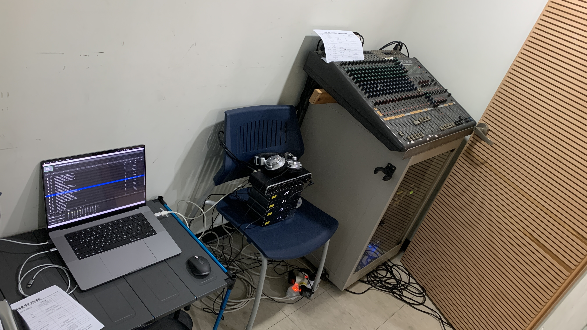
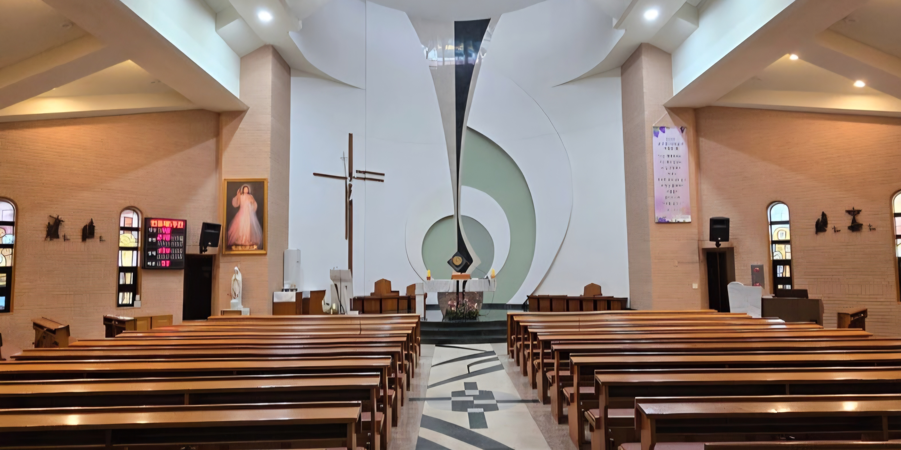

야외 결혼식
"수리산성지 야외 결혼식" 밴드 음향 세팅, 오퍼레이팅, 드럼
260530
Portfolio
공간, 인원, 목적에 따라 달라지는 조건 속에서 최적의 사운드를 만들어낸 실제 작업 사례를 담았습니다.
Installation 설치 & Operation 운영
"수리산성지 야외 결혼식" 밴드 음향 세팅, 오퍼레이팅, 드럼
260530

"평촌 성당 사순특강 연극" 음향 세팅, 오퍼레이팅, RF
260321

"안산 성마리아 성당" 음향 세팅, 오퍼레이팅
230205
Inspection 점검 & Consulting 컨설팅

음향 점검, EQ 수정, 마이크 및 스피커 위치 개선
240301